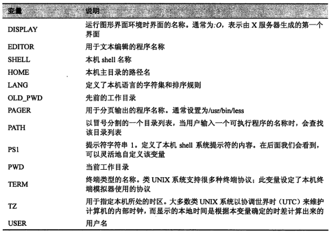
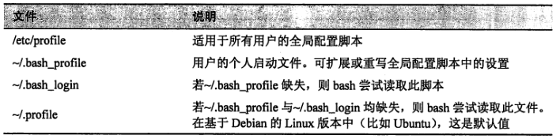
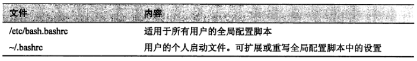

1. 环境
1.1. 环境中存储的是什么
1.1.1. 环境变量(environment variable)
除 shell 变量之外的所有其他变量
使用
printenv查看一些有趣的变量

1.1.2. shell 变量(shell variable)
由当前使用的 shell 程序(bash、zsh等)存放的少量数据
使用
set查看，同时显示 shell 变量和环境变量查看单个变量，可以使用
echo $name
1.1.3. 一些编程数据(programmatic data)
别名和 shell 函数
set和printenv都不能查看别名。直接使用alias
1.2. 环境是如何建立的
1.2.1. 环境建立
用户登录系统后，shell 程序会启动并读取一系列称为启动文件的配置脚本，这些脚本定义了所有用户共享的默认环境
接下来，shell 会读取更多存储在主目录下的用于定义个人环境的启动文件
1.2.2. shell 会话类型
- login shell 会话
- 需要输入用户名和密码
- 读取的启动文件

- non-login shell 会话
- GUI 中启动的终端一般都是 non-login shell 会话
- 读取的启动文件
- 读取启动文件后，non-login shell 还会继承父进程的环境，父进程通常是一个 login shell

- export PATH
- 该 export 命令告诉 shell，将本 shell 中的 PATH 变量导出到子进程中使用
1.3. 修改环境
用户应当修改哪些文件
- 一般，在 PATH 中添加目录或定义额外的环境变量，需要将这些更改放入 .bash_profile 中(或其他等效文件，Ubuntu 系统使用 .profile 文件)。其他修改应放入 .bashrc 文件中
- 除非是系统管理员需要修改用户公用的默认设置，普通用户只需要修改主目录下的文件即可
激活修改
source .bashrc